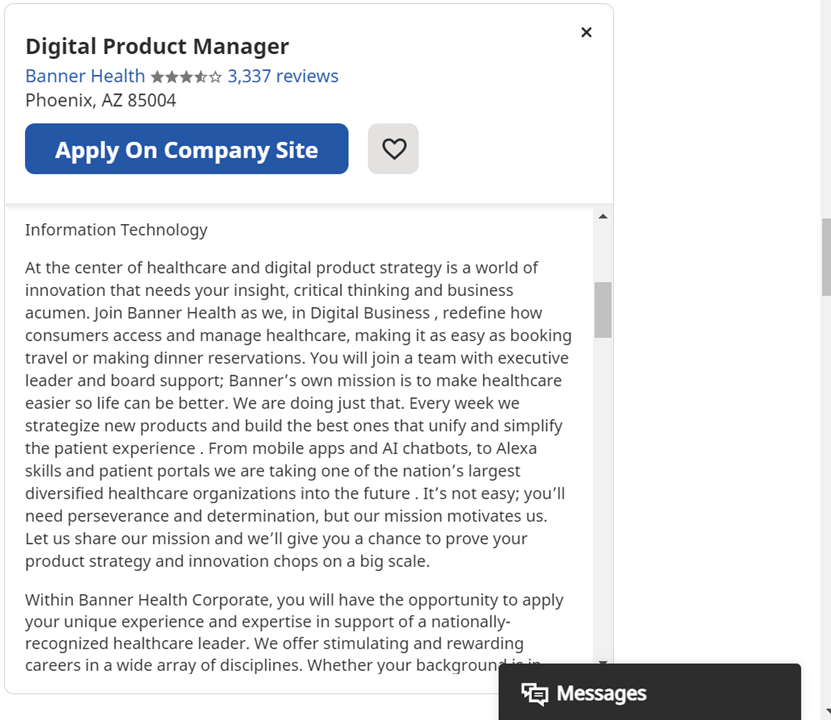
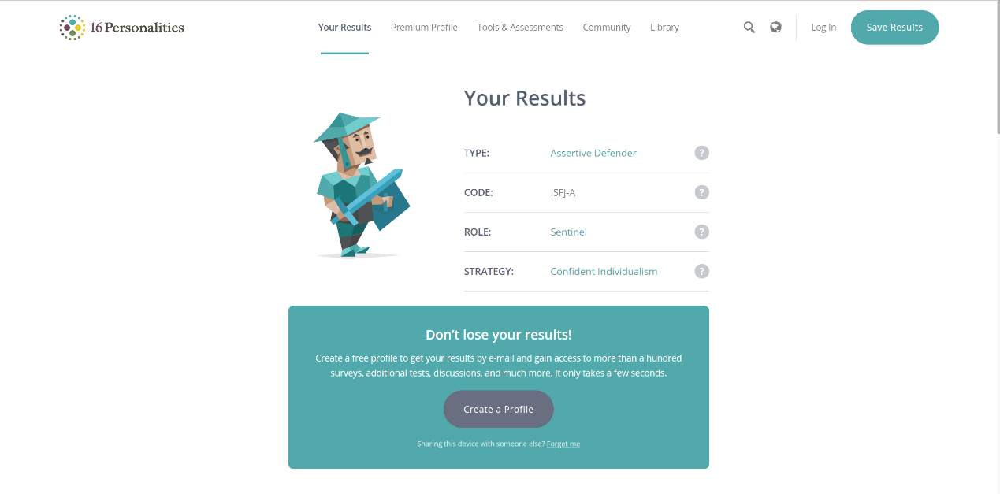
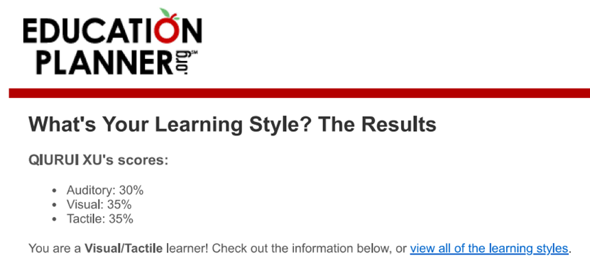
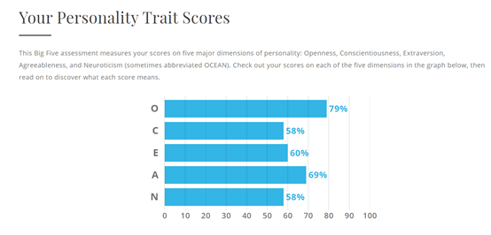
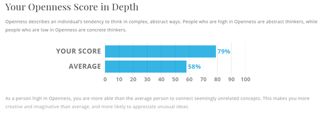

I am Qiurui Xu, from China. This is my final year in the bachelor degree at RMIT.
After the learning at the current bachelor degree and my individual experience, I find that I am highly interested into the information technology (IT). I am interested in the digital engineer aspect because I found that digitalization has become a mega trend so far. For example, in 2019, China has widely applied the ETP for automobile charging a vehicle in parking or using the high road. Besides, digitalization communities for the elder people have also been welcome by many people. This means that digital community will be widely applied in the worldwide. So, I think the particular event that sparked my interest should be the awesome outcome brought by the digitalization in that smaller digitalization elder care community. I have visited a digitalized community for elder people where the homes are smart with certain assisted living and home care facilities to aid the elder people. voice assistance like the Amazon Echo and Google Home could be used to aid the aging population to remember their daily schedules like when to eat, take medicine or visit doctors. In addition to that, there are also motion detectors, smart mattresses and personal robots which aid the aging population’s living experience more palatable. What’s more, the artificial intelligence would be applied to predict the senior’ behaviors’ patterns and prevent falls and other emergencies before they occur. Yet, there are still a large number of elder people who have not access to the digitalization communities and would experience potential accidents in their living life. Besides, the world is aging. So, there will be a great demand for the digital communities. As for my choice to learn at RMIT, I think I was impressed by the awesome graduation ceremony. I thought that RMIT is an academic institution where there are friendly teaching staff and students who could give me a collaborative learning environment to learn in the overseas university. Besides, I think RMIT’s IT major has good ranking in the most competitive majors in the world universities. So, I select RMIT ultimately. During my studies, I expect to learn both professional knowledges and improve my communication, problem solving, and team work skills. The professional knowledge in my studies range from the information system application, the design and marketing of a website, writing codes and the design an app, the match skills and research analysis skills via data collection, which are important for my future career Besides, other skills in my studies such as the communication skills, the problem-solving skills and team work skills are also important for me to my future career.
The job advertisement-Digital Product Manage
Screenshot of the job:
The position is about collecting ideas and setting priorities for the prototype, development and creation of digital products and services in support of Banner’s reinvention. The responsibility of the manager is to assimilate information from different sources and develop a strategy and product roadmap for the purpose of delivering engaging and meaning full digital experiences which bring real value for clients and the organization. The role this position played is to be a change agent and work collaboratively and serve as a critical source to leaders throughout the system for the purpose of proactively identifying, communicating and implementing strategic frameworks and systems to improve target clients’ experience about the service.
In order to apply for this position, I think I should have a strong technical and business knowledge as typically received from the completion of a bachelor’s degree in Business, Computer Sciences or related field. I should have a strong knowledge of digital product management throughout the production lifecycle, from idea initiation to the following product improvement and thus I should have a minimum of five years’ relevant experience. Experience or backgrounds in healthcare services, particularly in complex, matrixed delivery environments are favored bot not required. Further, I should have a critical and creative thinking ability and a strong working knowledge of customer service, organizational culture, change management, product development and process improvement. Besides, I should have a strong leadership skill to influence and collaborate with and motivate followers, and serve as an internal catalyst for strategic, progressive and successful changes. Besides, I should have a strong communication, presentation, collaboration, negotiation and relationship building skills to develop a relationship with internal and external stakeholders.
Currently, I have the experiences in design a healthcare App namely ordering or chatting with a register doctor via the app on the internet or via the mobile device. I also have the knowledge about how to develop a new product from idea initiation, product development, testing and the final commercialization. In order to successfully market the service or product, I also learned the professional knowledge in environment analysis and marketing promotions. Finally, I have strong communication skills, problem solving skills, team work skills, negotiation skills and the relationship building skills.
Currently, it is my last semester in RMIT. The bachelor degree learning experience gave me initial knowledge about the information systems, the roles of the information systems, the professional knowledge in designing an information system such as a medical care service app, a website design. Besides, I practiced and improved my teamwork skills, communication skills, relationship building skills, leadership skills, and problem-solving skills when working in a team context. I thought the experience to collaboratively develop a medical care service app is pretty important for me to both know the procedures of developing a digital product and the importance of the teamwork for new product or service development. Finally, I think I should learn more information system related knowledge such as the artificial intelligence, which is a mega trend in the future. So, I should keep on my master degree in the information system major in the future.
The results of an online Myers-Briggs test. www.16personalities.com
The results of an online learning style test.
The results of one further online test of your choosing.
 I am high in openness to experience, which could make me to be able than the average people to connect seemingly unrelated concepts and make me more creative and imaginative than average, and more likely to appreciate unusual ideas.
Based on these results, I think I am an introvertedly extraverted man, who is talkative but may just talk to the one who I think we have the same value and world view. What’s more, I am high in openness to experience, which means that I am highly creative and imaginative. This is supported by the learning style test that I am visual, which depends on visual tools to improve my understanding and learning. Yet, I learned that I am high in agreeableness and low in conscientiousness. A high agreeableness means that I am a good relationship builder but I could have a weak critical thinking ability for innovative products or services. therefore, I should improve my critical thinking ability to avoid being too agreeable. Furthermore, I should be high self-discipline to be self-controlled and conscientious.
I think I am creative and imaginative. The creation and imagination could help me come up with novel ideas for a team. Yet, my high scores in the agreeableness mean that I could reduce the team’s critical thinking ability and reduce the decision quality of our group. What’s more, I am weak in listening others’ words but strong in learning with visual aids. This means that I would be difficult to learn and communicate with other team members when just using oral communication.
When forming a team, I should learn to use critical thinking ability and imagination to critically evaluate all current options and avoid just following others’ words without objection. Besides, I should suggest my team members to communicate with both oral words and written words to increase the communication efficiency.
The project is a digital community for aged care. I have found that aging population is keeping on growing, and just depending on the institutionalized aging care facilities are not enough. Compassionate communities are a growing trend which are welcome by the government, the elder staff and the local communities for both meeting the care need for those elder people and lessening the government’s financing scare difficulty. The development of the compassionate community is based on the application of the information technology to make the community firstly digitalized. This means that each family of the community is digitally connected and thus when an elder staff needs assistance, the digital system could offer a signal for the direction office of the local community.
The world is growing aging, but the governments worldwide are found to experience finance scare in supporting the institutionalized aged care service institutions. So, just depending on the government for obtaining an aged care for health and wellbeing is not realistic. I have found that compassionate communities are favored by many registered skilled nurses in those aged care centers because they said that many elder people would rather state at home to receive medical care and die at home than living or dying at hospitals. Yet, the digital communities for aged care have not been successfully developed because in China or Australia, the aging people still need the aged center to care them or stay at home depending on their family members’ care. This is rather challenging because their family members also need to make a living. Therefore, when staying at home lonely, some aged people may experience an accident which could not be reported immediately and threaten the elder people’s health. So, I think there is a demand for digitalized aged care communities to offer smart communities to meet the aged population’s wellbeing and health at home care.
The digital Aged Care Solution is a solution which could enable senior citizens to live a healthier and more autonomous life based on the power of data and connected technologies. The digital Aged Care solution is a platform which can combine multiple sources of data in a single application to enable caregivers to check their elderly clients’ well-being on a dashboard view. The role of this solution is that it could help to predict risks, mobilize careers, share visibility with the family, and offer independence the elderly worldwide. This means that the digital Aged Care Solution harness ICT to create sustainable aged care services. The digital aged care solution is expected to meet aged care consumers’ needs for maintaining independence and aged with dignity. This digital empowered aged care solution could support the senior citizens’ aged care facility. This is because this Empowered Aged Care could connect loved ones together and incorporate relatives into the care team. The right digital solution is applied by this solution for the purpose of supporting aged care providers, residents and their family members. This solution could enable transparency through offering a centralized view of the resident, and obtaining new information to tailor services containing: dietary requirements, care needs and scheduling preferences and preferences. It could also increase accesses through offering a self-managed portal for residents’ relatives to offer recommendations, participate in resident events and feedbacks to the facilities. Furthermore, it could improve trust and relationships with residents’ relatives through connecting the families and residents in the digital platform. In addition, the aged care beds should be installed with digital information systems, containing software which could aid the management of clinical information, resident management and medication. The connection between the medication information obtained from the bed and other living situations and the aged care facilities, GPs and pharmacy contribute to greatly helping to improve the medication safety, particularly across care transitions, like planned or emergency hospital admissions. so, the installation of sensing technology in the end could help to record the body information about the elder people which are important to support how to offer care. So, when the software systems have high quality, codified data offered by the aged care solution, they could offer alert and decision supports for the care team members to make more rational decisions. All these health records and medicine information would be recorded in the Electronic Health Records system and the Medicines Information. besides, the care planning system could help the aged people to create a quick, easy and effective care plan in their clinical workflow. The Medical Director Care could be used to product the care plan quickly, easily and efficiently. This is because the Medical Director could make it easy to set up, populate and review the care plans and promote compliance with Medicare. There will also be customize templates for aged people to monitor and manage their health. So, while connecting with their family members and others they loved, the digital aged care community also improve the health of those elder people. Therefore, the wellbeing and health of those elder people could be achieved.
7-inch LCD full touch capacitive screen
Smart living room, smart kitchen, smart bathroom
Cloud monitoring for real-time location, physical sign detection, equipment statistics, movement dynamics, safety statistics and other aspects of monitoring also provide a full range of health, safety and humanized services for the elderly in the community. Relying on the smart life platform, the digital aged care platform connects all scenarios including personnel management, area management, and terminal management to build a series of IoT scenarios Intelligent wake-up function can automatically sense the lighting, automatically detect and adjust the brightness, and automatically turn off after a delay, so that the elderly no longer has to wake up in the dark and turn on the lights; for the elderly to suddenly feel unwell, twist their waist and other conditions, specialize in the bedroom and bathroom. Equipped with an indoor emergency alarm system, the elderly can directly press the emergency button when they encounter a situation, and the service center can quickly receive the elderly's distress signal and dispatch quickly to ensure the elderly's physical safety.
VLC (or Videoland Client) media player which could be used to pen audio and video files in any formats. KeePass, a handy password generator and credential storage tool for the aged people who can easily forget something such as the password of their devices.
The skills for writing software include mathematical aptitude, problem solving skills, programming language, excellent organizational and time management skills and accuracy and attention to detailed information. Among these skills, the computer programming is more essential because I should build something from scratch and make improvement or change to the existing software. So, I should have a deep knowledge about the programming languages and operating systems. Besides, I should develop the mobile development skills because businesses are increasingly mobile focused and seeking for developers who can build apps and navigate mobile operating systems. Besides, I should be attentive and detailed oriented because these two characteristics could enable me to practice bug fixing easily and efficiently.
The outcome of this project is that it could improve the wellbeing and health of the elder people. Rather than staying at hospitals or other aged care centers, many elder people prefer to stay at home. when living at home, the digital community solution could meet the elder people’s needs for living at home with their health information monitored fully. Meanwhile, the elder people would not feel alone when living at home and receive the health care services at home. Besides, it could lessen the government’s pressure in funding institutionalized aged care facilities due to scare finances.